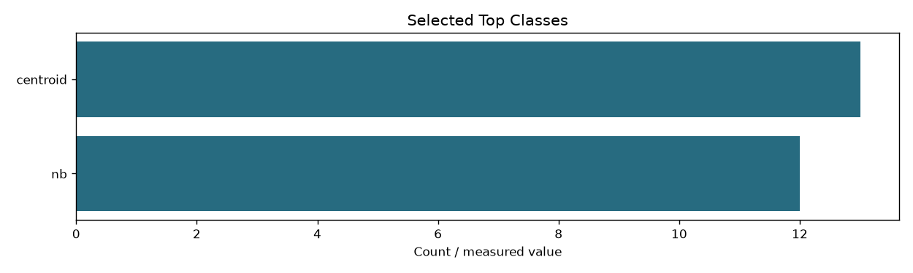
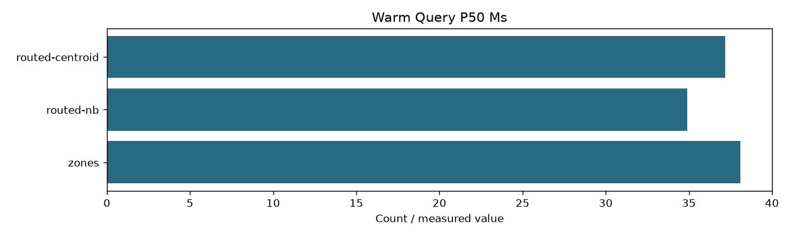

| weights_sha256 | c95a78664256adfeff41ff2a4bf1891615d94be3f21086ce48d3d11464058f8f |
|---|---|
| classifier_csv_sha256 | e9ff13c8df76535b2838baa4139264dfe1abd5a37583331bbba731a2409203bf |
| index_fingerprint | 4217438d8fd32410fd22acf441c1c5403837c0fbb26a0f85edbdf1633eae0790 |
| top_classes | {'nb': 12, 'centroid': 13} |
| validation_queries | ['DEV004', 'DEV008', 'DEV012', 'DEV016', 'DEV020', 'DEV024', 'DEV028', 'DEV032', 'DEV036', 'DEV040', 'DEV044'] |
| selection_rule | Smallest top-k classes with mean exact-zone top-20 recall >=0.98 and each query >=0.90 |
| recall | {'nb': {'1': 0.5863636363636363, '2': 0.6818181818181818, '3': 0.8545454545454546, '4': 0.8545454545454546, '5': 0.8636363636363636, '6': 0.8636363636363636, '7': 0.8863636363636364, '8': 0.8863636363636364, '9': 0.8863636363636364, '10': 0.890909090909091, '11': 0.890909090909091, '12': 1.0, '13': 1.0, '14': 1.0}, 'centroid': {'1': 0.7363636363636363, '2': 0.9454545454545454, '3': 0.9727272727272728, '4': 0.9727272727272728, '5': 0.9818181818181819, '6': 0.9818181818181819, '7': 0.9818181818181819, '8': 0.9818181818181819, '9': 0.9818181818181819, '10': 0.9818181818181819, '11': 0.9818181818181819, '12': 0.9818181818181819, '13': 1.0, '14': 1.0}} |
| candidate_fraction | {'nb': {'1': 0.04583059820291966, '2': 0.10101334920816313, '3': 0.1971871785944929, '4': 0.241544128394773, '5': 0.34849326427073674, '6': 0.4219909800492722, '7': 0.51519093646436, '8': 0.5901848903866035, '9': 0.6644945080353039, '10': 0.7561968974983855, '11': 0.8232671675388079, '12': 0.8789934011379915, '13': 0.9511530069602979, '14': 1.0}, 'centroid': {'1': 0.060062135076021116, '2': 0.1411327293456682, '3': 0.20186724142054926, '4': 0.2681335824405956, '5': 0.36580763639552777, '6': 0.4495464777278441, '7': 0.5170100750245165, '8': 0.6001908168716131, '9': 0.6884768402001717, '10': 0.7547710861944791, '11': 0.8318207065539482, '12': 0.8968884624890706, '13': 0.9483598519176032, '14': 1.0}} |
| meaning | Recall of exhaustive weighted-zone top-20, not relevance Recall@20; validation is not a guarantee on new queries |
| warm_query_p50_ms | {'zones': 38.11194500121928, 'routed-nb': 34.914556999865454, 'routed-centroid': 37.19156099941756} |

